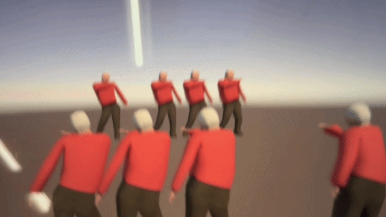
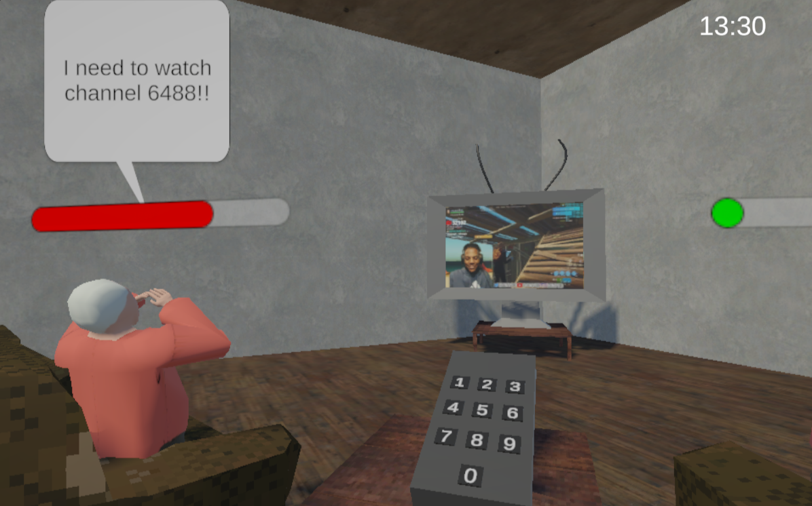
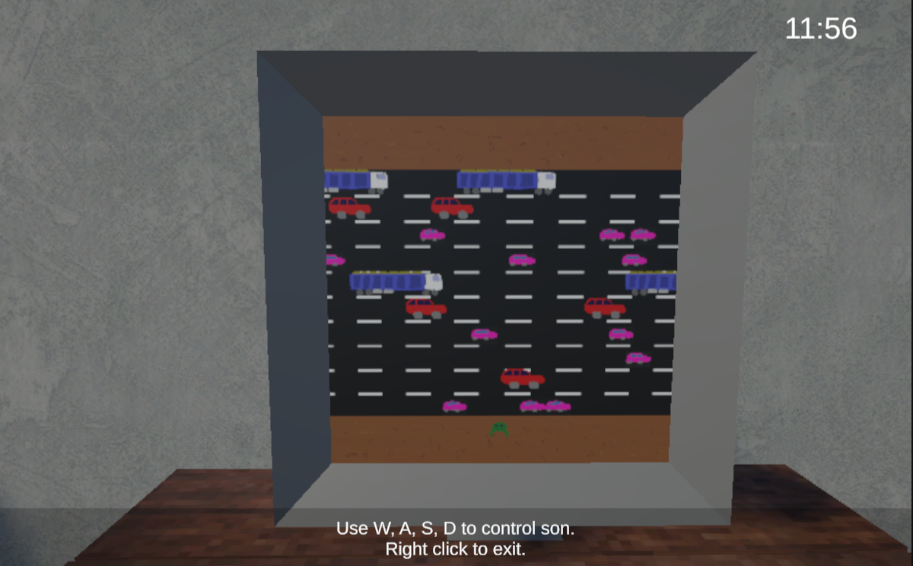
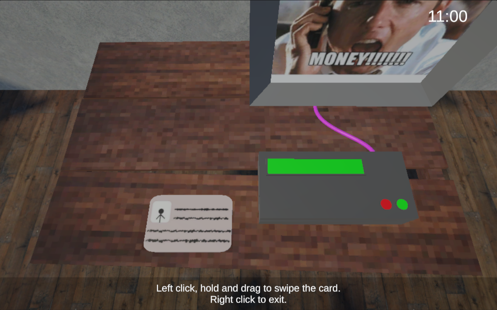
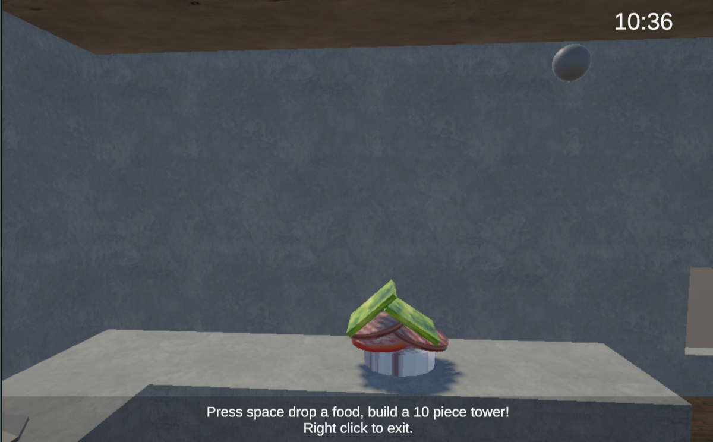
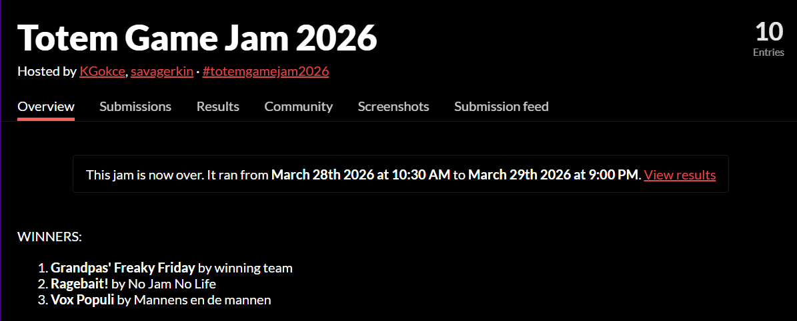

// Game Jam · 32hr
A 32 hour game jam project based on the theme “ragebait,” where I designed and programmed the core gameplay loop as part of a small team working under tight time constraints.

Project 03
A chaotic day management game where you keep a group of frustrated grandpas satisfied by rapidly switching between absurd tasks like fixing TV channels, making oversized sandwiches, helping with broken games, and solving a faulty payment system, with success measured in a final end of day report.
Overview
This game jam project is a collection of 3D minigames where everyday tasks are turned into short, high pressure challenges such as a Frogger like computer game, a timed sandwich making task, a TV remote input challenge, and a precision card swipe mechanic.
The experience is comedic and intentionally stressful, focusing on lighthearted frustration rather than a traditional win or lose structure. Players move through a sequence of minigames and receive a final score based on performance, creating a short replayable “bad day simulator.”
32
Hours to ship
5
Team size
#1
Jam ranking
The Theme
The jam theme was “ragebait,” which I interpreted as designing interactions that intentionally create frustration through simple but unpredictable gameplay moments. Instead of taking it literally, I focused on turning familiar tasks into slightly unfair or awkward challenges that create tension and comedic frustration.
Early on, we considered building a single continuous experience around one mechanic, but this quickly felt too limited for the variety we wanted. We pivoted to a structure of multiple short minigames, which allowed each idea to explore a different type of frustration such as timing, spatial awareness, and precision under pressure.
Jam theme:“Ragebait” — I interpreted it as designing intentionally frustrating interactions through simple mechanics that become stressful under pressure.
48hr Process
This jam was built under tight time pressure, so development was heavily focused on quickly prototyping ideas, identifying what worked, and cutting anything that didn’t fit the core experience.
Screenshots




Results
Out of 10 entries, Grandpas' Freaky Friday placed first at Totem Game Jam 2026. Here's the official results page.

// totemgamejam2026 · March 28–29 2026 · 10 entries
Lessons Learned
This being my first game jam, the 32 hour timeframe made it clear how much design depends on scope, speed, and decision making under pressure, where ideas constantly need to be tested, adjusted, or cut.